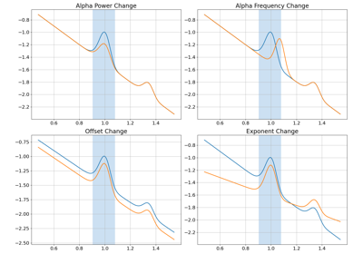

fooof.plts.spectra.plot_spectra_shading¶
- fooof.plts.spectra.plot_spectra_shading(freqs, power_spectra, shades, shade_colors='r', add_center=False, ax=None, **plot_kwargs)[source]¶
Plot one or multiple power spectra with a shaded frequency region (or regions).
- Parameters:
- freqs1d or 2d array or list of 1d array
Frequency values, to be plotted on the x-axis.
- power_spectra1d or 2d array or list of 1d array
Power values, to be plotted on the y-axis.
- shadeslist of [float, float] or list of list of [float, float]
Shaded region(s) to add to plot, defined as [lower_bound, upper_bound].
- shade_colorsstr or list of string
Color(s) to plot shades.
- add_centerbool, optional, default: False
Whether to add a line at the center point of the shaded regions.
- axmatplotlib.Axes, optional
Figure axes upon which to plot.
- **plot_kwargs
Additional plot related keyword arguments. This can include additional inputs into
plot_spectra().
Notes
Parameters for plot_spectra can also be passed into this function as keyword arguments.
This includes log_freqs, log_powers & labels. See plot_spectra for usage details.
Examples using fooof.plts.spectra.plot_spectra_shading¶



Conflating Periodic & Aperiodic Changes
Conflating Periodic & Aperiodic Changes